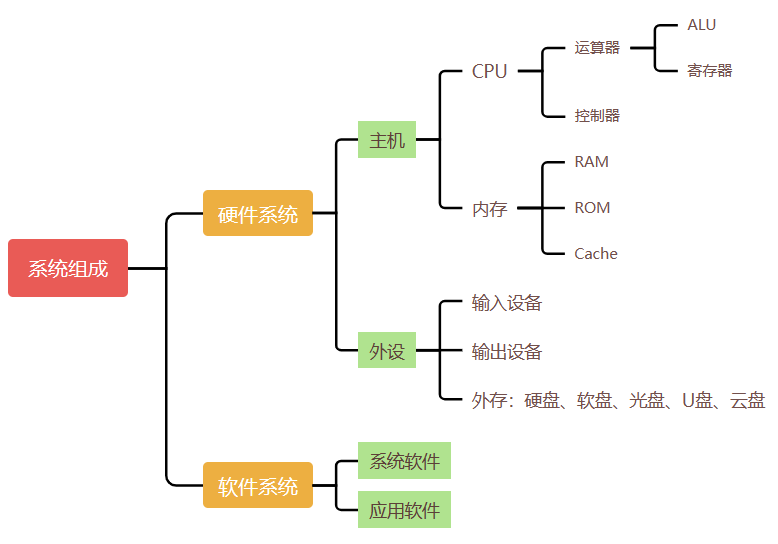
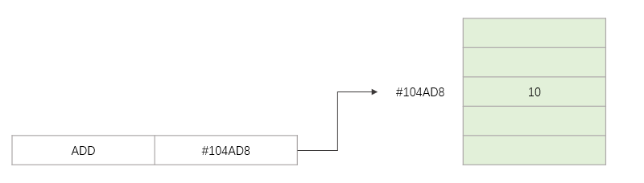
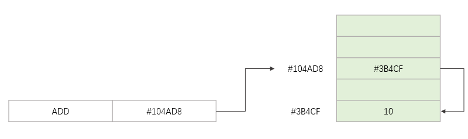
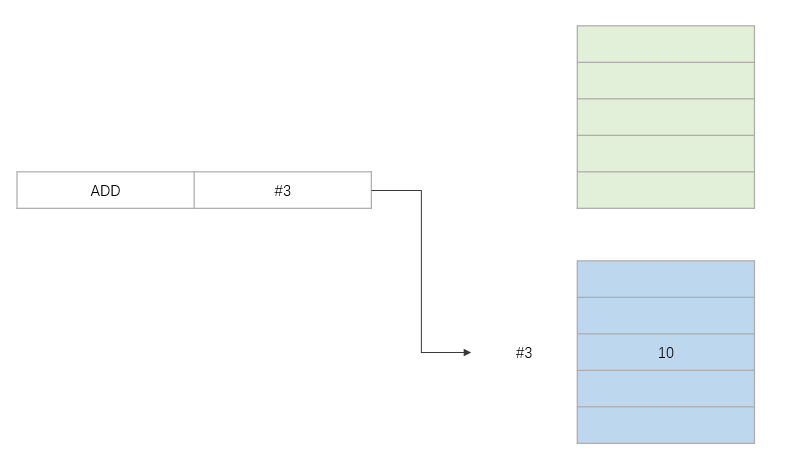
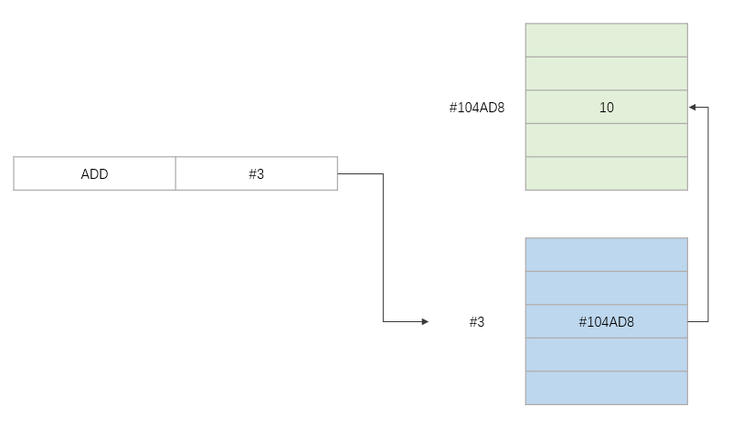
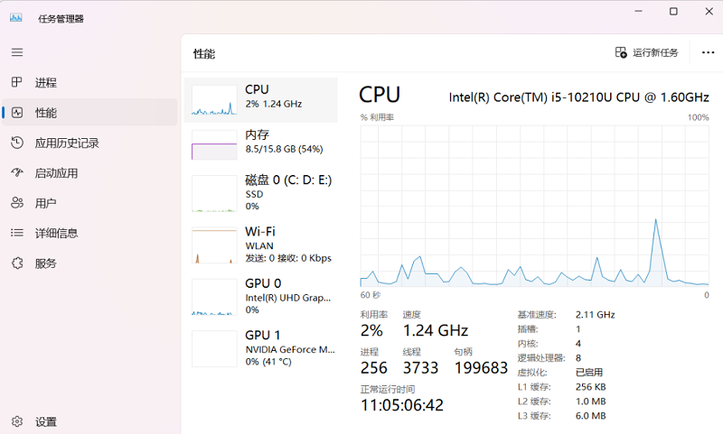

系统组成
System
- 内容
-
概述 - 自学系统组成信息表示微型计算机系统 - 自学发展 - 自学
诺依曼结构
 .
1946年，美籍匈牙利数学家 冯· 诺依曼
提出；它由运算器、控制器、存储器、输入设备和输出设备五大基本部件组成。
.
1946年，美籍匈牙利数学家 冯· 诺依曼
提出；它由运算器、控制器、存储器、输入设备和输出设备五大基本部件组成。- . 是现代计算机的雏形，沿用至今。
-
运算器 Arithmetic Logical Unit
用于完成各种算术运算、逻辑运算和数据传送等数据加工处理。
控制器 Control Unit用于控制程序的执行，是计算机的大脑。
控制器根据存放在存储器中的指令序列|程序进行工作，并由一个程序计数器控制指令的执行。
控制器具有判断能力，能根据计算结果选择不同的工作流程。
控制器和运算器共同组成中央处理器CPU - Central Processing Unit。
CPU的主要功能是解释计算机指令以及处理数据。
CPU是一块超大规模集成电路VLSI - Very Large Scale Integration Circuit，是计算机运算核心和控制核心。
存储器 Memory Unit用于记忆|存储程序和数据。
程序和数据以二进制代码形式不加区别地存放在存储器中。
以字节|Byte为单位，一个字节占用一个存储单元。
每个存储单元都有唯一的地址号，CPU根据地址访问存储的内容
存储器可以分为内部存储器和外部存储器：
内部存储器：称为内存或者主存，存放将要执行的程序、数据或指令。
外部存储器：存放"暂时"用不着的程序和数据，可以和内存交换数据。 一般是磁盘、光盘、U盘、硬盘等。
输入设备 Input Unit用于将数据或程序输入到计算机中，例如：鼠标、键盘。
人机交互的重要接口之一。
输出设备 Output Unit将数据或程序的处理结果展示给用户，例如：显示器、打印机。
人机交互的重要接口之一。
-

冯· 诺依曼结构 - 思想
- · 规定控制器是根据存放在存储器中的程序来工作的，即计算机的工作过程就是运行程序的过程。
- . 为了使计算机能正常工作，程序必须预先存放在存储器中。这就是存储程序的概念。
- 特点
-
采用二进制形式表示数据和指令。整个结构以运算器为中心，数据流动必须经过运算器，并由控制器集中控制。采用存储程序和程序控制的工作方式。
系统组成
- . 一个完整的计算机系统包含硬件系统和软件系统两大部分
- 硬件系统
- . 组成计算机的各个硬件部分
- . 眼睛能看得到的存在
- 软件系统
-
系统软件：是指担负控制和协调计算机及其外部设备、支持应用软件的开发和运行的一类计算机软件；它一般包括操作系统、语言处理程序、数据库系统和网络管理系统。如：Dos、Window、Linux、Android、IOS、COS应用软件：为特定领域开发、并为特定目的服务的一类软件；它是直接面向用户需要，帮助用户提高工作质量和效率，甚至可以帮助用户解决某些难题等等；如：办公软件Office、社交软件QQ、Wechat、图形处理软件PS、杀毒软件、休闲娱乐软件等等。
-
 系统组成
工作原理
- . 根据冯·诺依曼机的"存储程序"概念，计算机的工作过程实际上就是执行指令和程序的过程。
- 指令 Instruction Code
- . 指令是能被计算机识别并执行的二进制代码，用来完成某一特定的操作。
- . 计算机运行的最小功能单位。
- . 指令通常用二进制代码形式表示，也可以用助记符表达的汇编语言形式表示。
- . 一条指令由操作码 Opcode和操作数 Operand两部分组成。操作码表示计算机要完成的操作，如取数、加法等；操作数表示要操作对象的内容或所在内存单元的地址。
-
指令分类 类别 示例 说明 零地址指令 没有地址码，只有操作码 单地址指令 ADD a 自增/减；读；存 二地址指令 ADD a b a+b，结果放在a 三地址指令 ADD a b c a+b，结果放在c 四地址指令 额外增加：下一条指令的地址 - 指令系统 Instruction Code System
- . 一台计算机所有指令的集合，称为该计算机的指令系统，也称指令集 Instruction Code Set。
- . 不同的 CPU 能够听懂的语言不太一样。比如，我们的个人电脑用的是 Intel 的 CPU，苹果手机用的是 ARM 的 CPU。这两者能听懂的语言就不太一样。类似这样两种 CPU 各自支持的语言，就是两组不同的计算机指令集。
- .CISC - Complex instruction set Computing，复杂指令系统计算机
- .RISC - Reduced Instruction Set Computing，精简指令系统计算机
-
CISC vs RISC 特性 CISC RISC 指令系统 复杂，庞大 简单，精简 指令数目 一般大于200 一般小于100 指令格式 一般大于4 一般小于4 寻址方式 一般大于4 一般小于4 指令字长 不固定 等长 可访存指令 不加限制 只有LOAD/STORE指令 各种指令使用频率 相差很大 相差不大 各种指令执行时间 相差很大 绝大多数在一个周期内完成 优化编译实现 很难 很容易 程序源代码长度 较短 较长 控制器实现方式 绝大多数为微程序控制 绝大多数为硬布线控制 软件系统开发时间 较短 较长 - . 不同的计算机类型，其指令系统的指令条数和功能也不尽相同。根据功能，指令系统可分为以下五种类型
-
数据传送：负责数据在内存与CPU之间的传输。数据处理：对数据进行算术、逻辑或关系运算。程序控制：控制程序中指令的执行顺序，如条件转移、无条件转移、调用子程序、返回、停机等。输入/输出：用来实现外部设备与主机之间的数据传输。状态管理：对计算机的硬件进行管理等。
- 寻址方式
- . 寻找地址码|操作数；对指令的寻址；对数据的寻址
-
立即寻址：操作数放在指令中，操作数也叫立即数；如果操作数比较大，突破了地址码长度的限制，就必须通过存放地址来指向数据；速度最快直接寻址：操作数存放在内存中，地址码直接给出对应的内存地址间接寻址：地址码存放的是操作数在内存中的地址寄存器寻址：操作数存放在寄存器；地址码给出使用的寄存器的编号寄存器间接寻址：操作数存放在内存，其地址由寄存器给出；地址码给出寄存器的编号
-
立即寻址  直接寻址  间接寻址  寄存器寻址  寄存器间接寻址 -
. 内存存放：操作数本身或操作数的地址. 寄存器存放：操作数本身或操作数的地址
- 程序 Program
- . 指能完成特定功能的一组指令的有序集合。
- . 计算机按照程序设定的指令顺序依次执行，完成对应的一系列操作，这就是程序执行的过程。
- 执行过程 Processing
-
取指令：根据当前控制器中程序计数器的指令起始地址值，从内存中取出指令送往控制器的指令寄存器存储起来。分析指令：将指令寄存器中存放的指令送往指令译码器，对操作码进行译码，即将指令的操作码转换成相应的控制电位信号，由地址码确定操作数地址。执行指令：由操作控制部件发出该操作所需要的一系列控制信号，驱动相应部件完成该指令所要求的操作。程序计数器自动加1：为执行下一条指令做好准备，即形成下一条指令地址。
-
取 取 取 分析 分析 分析 执行 执行 执行 - 流水线
- . 多条指令执行的并行处理技术
- . 每个阶段由不同的处理部件完成，所以要确保处理部件没有空闲，利用效率和处理效率要高
- . 整体处理过程明显缩短
-
取 取 取 取 取 取 取 分析 分析 分析 分析 分析 分析 分析 执行 执行 执行 执行 执行 执行 执行 - 零地址指令采用( )。
-
立即寻址间接寻址堆栈寻址变址寻址
- 下拉关于流水线方式执行指令的叙述中，不正确的是（）。
-
流水线方式可以提高单条指令的执行速度流水线方式可以同时执行多条指令流水线方式提高了各部件的利用率流水线方式提高了系统的吞吐率
性能指标
- 主频
- . 机器内部主时钟的运行频率，常以MHz、GHz为单位；主频越高，执行指令的速度越快
- . 时钟周期，主频的倒数：CPU时钟周期=1/主频；1Khz=1*103 次/秒，即每秒103个时钟周期
- . CPI：指令的平均时钟周期 clock per instruction；每条指令执行需要的时钟周期
- . IPC：周期运行指令条数 instruction per clock；IPC=1/CPI
- 运算速度
- . 用每秒执行的指令数来衡量
- . MIPS - million instruction per second，每秒百万条指令；MIPS=主频/CPI=主频*IPC
- . MFLOPS - million floating-point operation per second，每秒百万次浮点运算
- 主频是80Mhz，CPI是4；求MIPS
-
分析：从单位的变换入手80MHZ，即每秒80M的时钟周期：80M clock/秒CPI是4，即每个指令需要4个时钟周期：4 clock/指令80M/4=20M 指令/秒=20MIPS
- 字长
- . 指CPU一次能处理的数据的位数。
-
机器字长：通常说的32位或64位，指的是计算机执行一次整数运算能够处理的二进制数据的位数存储字长：一个存储单元存储的二进制代码的位数；一般和机器字长相等，也可以是机器字长的整数倍指令字长：一条指令包含的二进制代码的位数；可以等于存储字长；也可以是存储字长的整数倍
- 机器字长32位，存储字长8位，读的时候一次读32位，相当于读了4个存储单元的数据，再通过其它方法使用其中特定的数据
- CPU核数
- . 多核CPU可以增强计算机的并行处理能力。目前CPU有双核、4核、8核和12核、16核等多种类型。
-
 CPU核数 - 存储容量
- . 指能存储信息的最大容量，一般包含主存容量和辅存容量。常用单位有MB、GB、TB等。